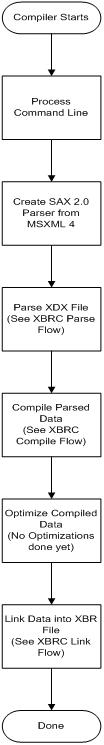

XbRC Architecture
The Xbox Resource Compiler (XbRC) is broken up into several stages:
- Creating the parser. XbRC uses the MSXML SAX parser.
- Parsing the XDX File. The MSXML SAX parser run the XDX file and calls the XbRC parser code back as it finds each tag start, tag end, or element data. It also calls the XbRC code back with errors encountered during the parsing.
- Compile the Data. After the parsing is complete, the compiler makes use of the MSXML4 XML parser to parse the file into a series of classes that act as containers for the parsed data. These containers are then compiled into the data needed to create the exact memory footprints needed for Xbox resources. These footprints are created during the link phase, which also combines all of the resources into a single file. The compiler also does dependency checking to insure that work is not done unless it needs to be.
- Optimize. The compiler calls the optimize member function of each container class. Presently, no optimization is done, but it would be easy to add things such as a triangle stripper to this phase.
- Link. Finally, the compiler calls each link member function of each container class. The linker removes duplicated resources that are the same type with the same identifier. For example, if you had two textures with the same identifier defined in two different places, the compiler will merge these into a single resource with the same identifier.
